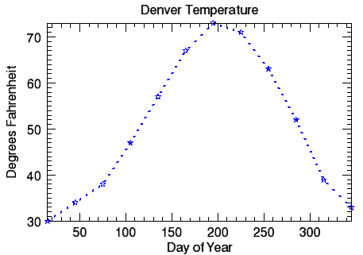
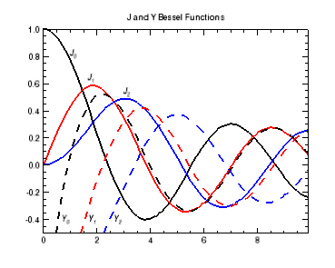
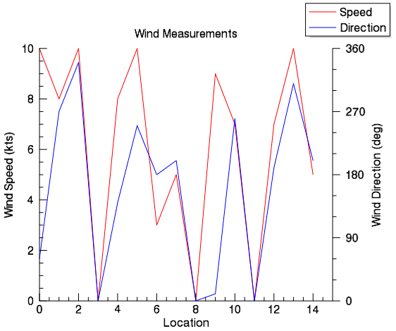

You can create plot graphics using the PLOT function. In this topic, we will use the PLOT function using two variables to display a two-dimensional plot.
The example below shows a visualization of precipitation and temperature data for Denver, Colorado.
|
|
 |
The code shown below creates the graphic shown above. You can copy the entire block and paste it into the IDL command line to run it. The keywords used are explained in detail after the example code.
; Define the data.
PRECIP=[0.5,0.7,1.2,1.8,2.5,1.6,1.9,1.5,1.2,1.0,0.8,0.6]
TEMP=[30, 34, 38, 47, 57, 67, 73, 71, 63, 52, 39, 33]
DAY=FINDGEN(12) * 30 + 15
; Display the first plot to display the precipitation data.
p1 = PLOT(DAY, PRECIP, 'r-:2', $
TITLE = 'Denver Precipitation', $
YTITLE = 'Inches', XTITLE= 'Day of Year')
; Display the second plot to display the temperature data.
p2 = PLOT(DAY, TEMP, 'bS:3', /YNOZERO, $
TITLE = 'Denver Temperature', $
XTITLE = 'Day of Year', $
YTITLE = 'Degrees Fahrenheit')
This example uses data created by Bessel functions, along with the TEXT function for annotations.

The code shown below creates the graphic shown above. You can copy the entire block and paste it into the IDL command line to run it.
; Define the data.
X = FINDGEN(100)/10
; Plot J and Y Bessel Functions:
pj0 = PLOT(X, BESELJ(X, 0), '2', $
TITLE='J and Y Bessel Functions', YRANGE=[-0.5,1])
pj1 = PLOT(X, BESELJ(X, 1), 'r2', /OVERPLOT)
pj2 = PLOT(X, BESELJ(X, 2), 'b2', /OVERPLOT)
py0 = PLOT(X, BESELY(X, 0), '--2', /OVERPLOT)
py1 = PLOT(X, BESELY(X, 1), 'r--2', /OVERPLOT)
py2 = PLOT(X, BESELY(X, 2), 'b--2', /OVERPLOT)
; Define the x and y coordinates.
xcoords = [1, 1.66, 3, .7, 1.7, 2.65]
ycoords = [.8, .62,.52, -.42, -.42, -.42]
; Annotate the plot.
labels = '$\it' + ['J_0','J_1','J_2','Y_0','Y_1','Y_2'] + '$'
t = TEXT(xcoords, ycoords, labels, /DATA)
This example shows how to plot two dependent variables (wind speed and direction) against one dependent variable (location).

The code shown below creates the graphic shown above. You can copy the entire block and paste it into the IDL command line to run it.
file = FILE_WHICH('ascii.txt')
d = READ_ASCII(file, data_start=5)
speed = LONG(reform(d.(0)[5,*]))
direction = LONG(reform(d.(0)[6,*]))
location = INDGEN(n_elements(speed))
p_wspd = PLOT(location, speed, 'r', $
AXIS_STYLE = 1, $ ; make only x & y axes, not box axes
MARGIN = [0.15, 0.15, 0.20, 0.15], $
; leave room for bottom & right axes
NAME = 'Speed', $
XTITLE = 'Location', $
YTITLE = 'Wind Speed (kts)', $
TITLE = 'Wind Measurements')
; With CURRENT, the same window is used but not
; the same data coordinate system.
p_wdir = PLOT(location, direction, 'b', $
/CURRENT, $
NAME = 'Direction', $
YRANGE = [0,360], $
AXIS_STYLE = 0, $ ; no axes
MARGIN = [0.15, 0.15, 0.20, 0.15]) ; need to use the same margin as above
; Make a second y-axis for the wind direction.
a_wdir = AXIS('y', $
TARGET = p_wdir, $
MAJOR = 5, $ ; [0, 90, 180, 270, 360]
MINOR = 2, $
LOCATION = [max(p_wdir.xrange),0,0], $
; right y-axis, data coordinates
TEXTPOS = 1, $ ; text faces outward
TITLE = 'Wind Direction (deg)')
!null = LEGEND(target=[p_wspd, p_wdir])